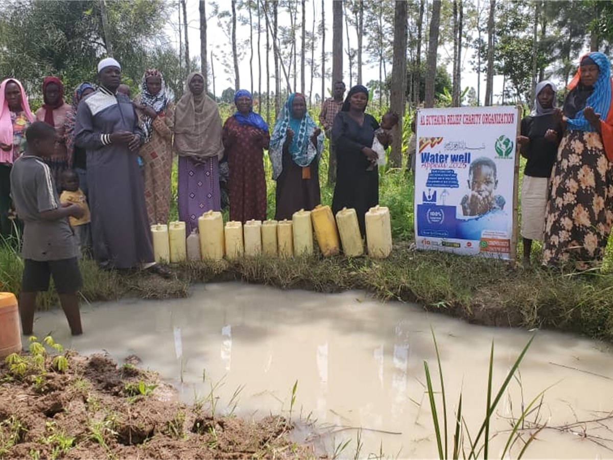
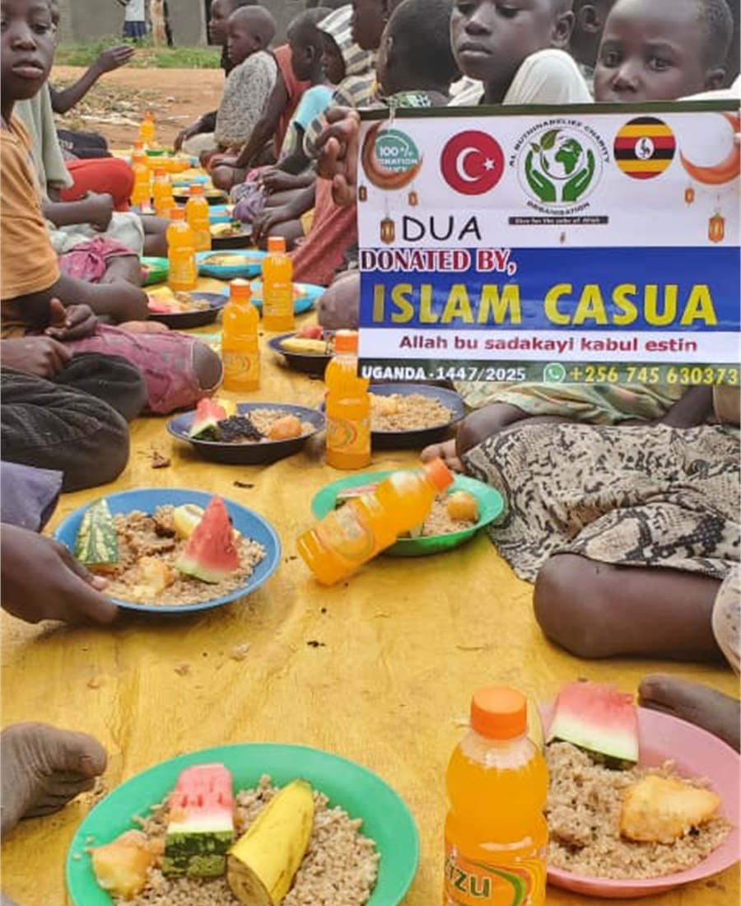
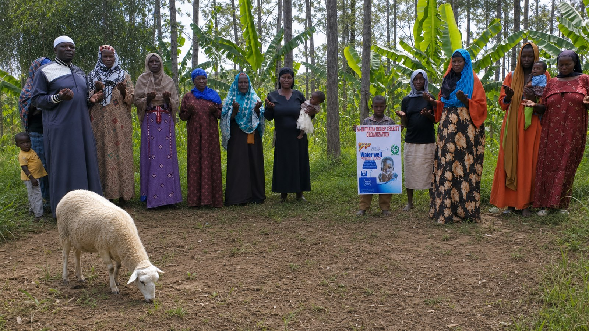
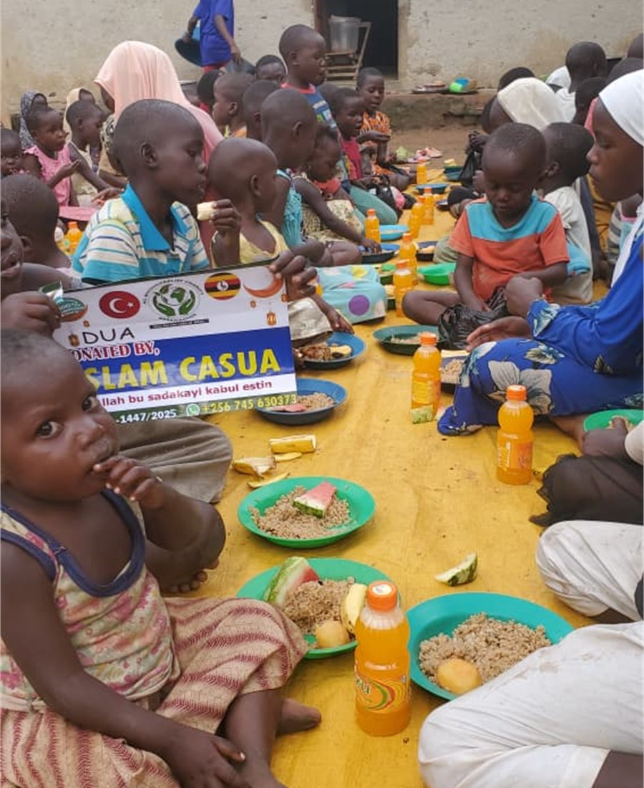
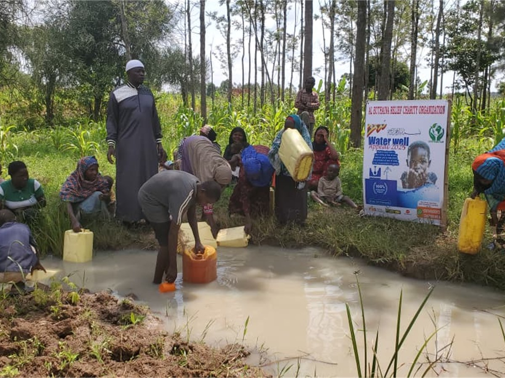
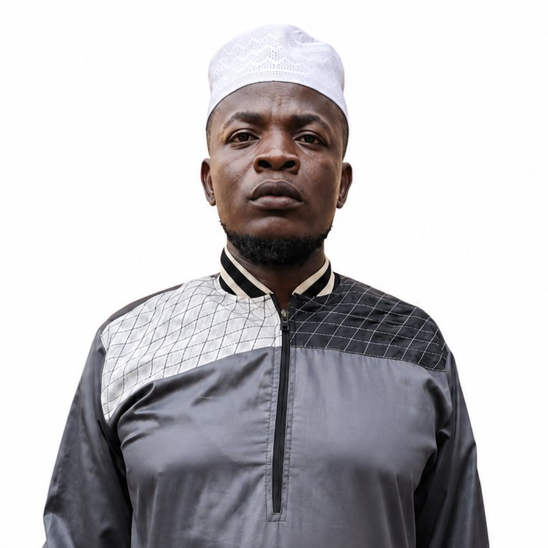

Water
Clean water access
Community water projects that protect health and reduce the daily burden of unsafe water collection.
View programme →Charity rooted in iman · Action grounded in community
Al Buthaina Relief Charity Organisation works alongside communities in Uganda to deliver clean water, food, seasonal Islamic giving and practical humanitarian support with dignity.
Confirm all payment details through our official WhatsApp number before transferring funds.
Our work
We respond to immediate needs while supporting projects that can strengthen health, faith and family wellbeing over time.

Community water projects that protect health and reduce the daily burden of unsafe water collection.
View programme →
Nutritious meals and food assistance for vulnerable families, children and Ramadan gatherings.
View programme →
Respectful seasonal distribution planned around current local needs and donor intentions.
View programme →
Food, clothing, medical and practical assistance for children and households facing hardship.
View programme →
Our impact approach
We will publish verified totals as reporting records are consolidated. Until then, we show real field evidence without inventing fundraising or beneficiary numbers.
Community needs guide project selection and practical delivery.
Field teams capture appropriate photos, video and project information.
Partners can request updates and evidence through the official contact channel.

A message from our Chairman
Assalamu Alaikum. May the peace, mercy and blessings of Allah be upon you.
Al Buthaina Relief Charity Organisation welcomes partnerships with donors and organisations seeking a grassroots field implementation collaborator in Uganda. Our programmes include Ramadan Iftar, Qurbani and Aqeeqah, water wells, mosque construction, orphan sponsorship, medical aid, clothing, shelter and Quran distribution.
We look forward to working together to deliver meaningful projects to communities in need, with care, dignity and accountability.
Chairman · Mbale, Uganda
Discuss a partnership
Our leadership
Founder · Al Buthaina Relief Charity Organisation
MBULAKA ABUDU is the Founder of Al Buthaina Relief Charity Organisation. His profile is presented here as part of the organisation's commitment to clear, visible leadership and accountable community service.
From the field
Videos are loaded only when you choose to play them, helping visitors who use mobile data.
Listening to families affected by unsafe and unreliable water access.
Preparing and sharing food with children and families facing hardship.
Latest updates
These vertical field clips were recorded on location and are loaded only when you choose to play them.
A field journey to reach families and communities receiving support.
Food support being served to children during a community programme.
Prepared plates and refreshments ready to be shared with children and families.
Local engagement before relief support is distributed to children and families.
Documenting seasonal Qurbani work and community participation in Uganda.
News from the field
Recent photographs, project notes and video updates published by the Al Buthaina team.
Donate with care
Use the supplied Stanbic Bank details or contact the organisation for Western Union, Ria and MoneyGram instructions. Always confirm the recipient details using the official WhatsApp number before sending.
Payment safety: Currency, branch and SWIFT details were not provided. Confirm any missing information and verify this account through WhatsApp at +256 745 630 373 before transferring funds.
Speak directly with Al Buthaina about partnership and field implementation.